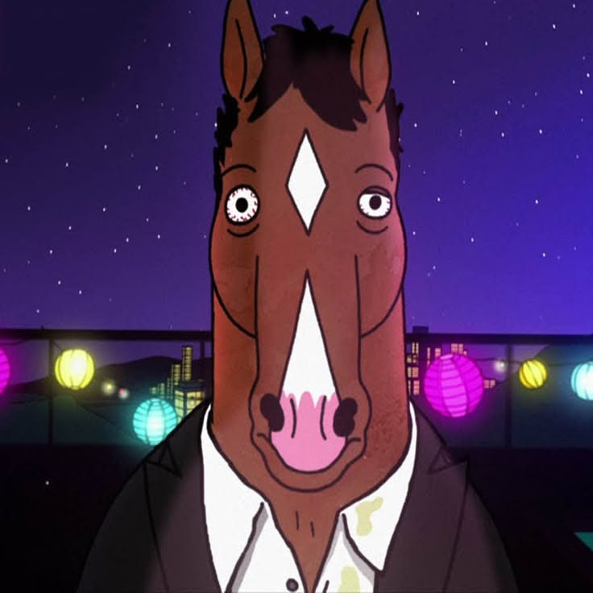

okay so BoJack Horseman is basically a talking horse who is NOT okay and honestly? same.
Hes a washed up sitcom star whose entire personality is drinking, self sabotage, and ghosting his own growth. The show really said "lol its a cartoon with animal puns" and then hit you with depression, addiction, and generational trauma out of nowhere.
Like bestie, I came here for the funny horse, why am I crying at 3am?? Every time he says "I'm gonna be a better person" it's giving delulu, and he fumbles it every single time. It's chaotic, it's devastating, it's lowkey a mirror you did not ask for. 10/10, would emotionally spiral again.

You can find GitHub here just click.
Want to talk to us? click to jump to the email odds are we'll leave you on read.